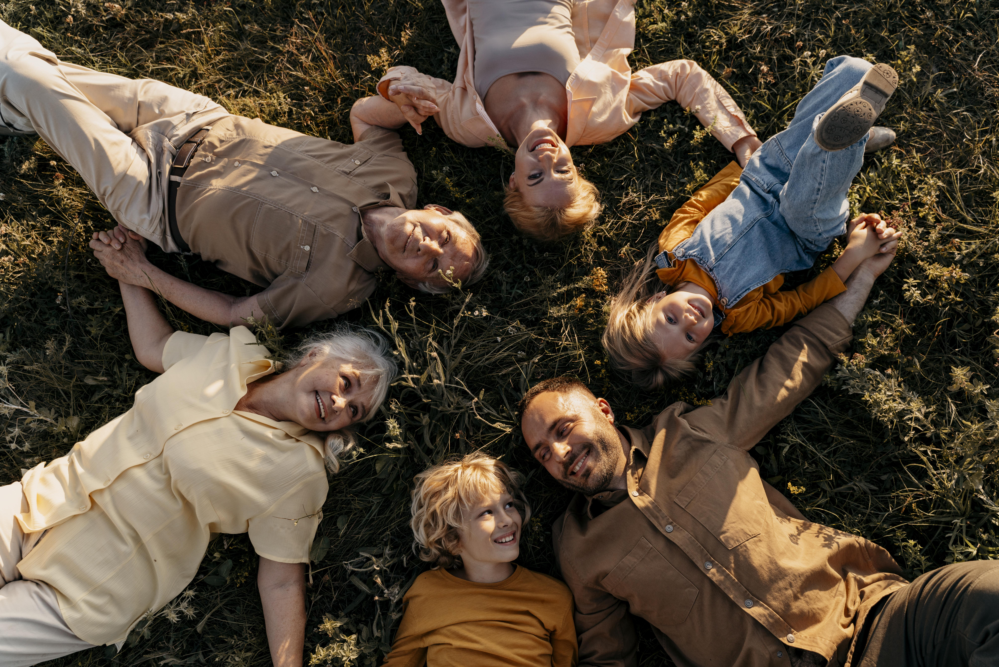
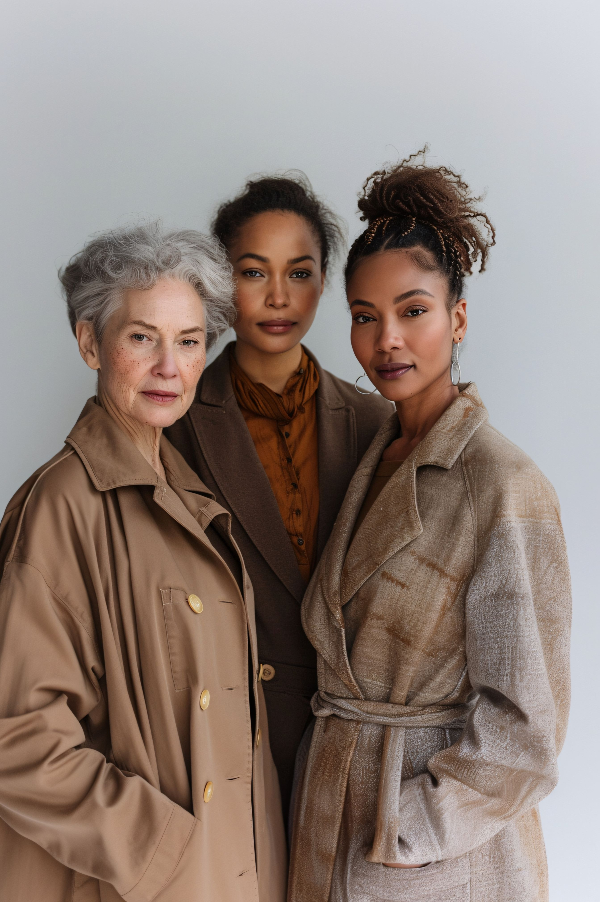
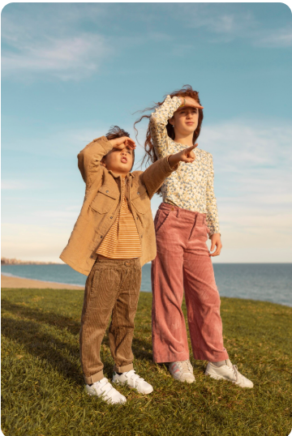
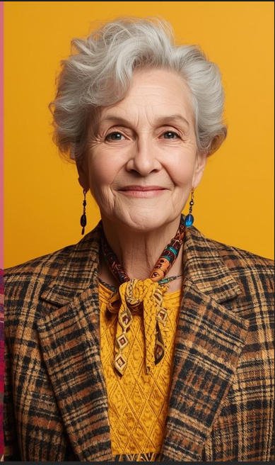

Moda sem Fronteiras
A moda é uma poderosa ferramenta de expressão pessoal, transcendendo idade, gênero e rótulos. Em 2026, a tendência é a inclusão e a versatilidade, onde cada indivíduo encontra seu estilo autêntico, celebrando quem realmente é. A chave é a fluidez, permitindo que peças e conceitos sejam adaptados e remixados para atender a todas as corporalidades e preferências.

Cores e Estampas: Expressão Individual Sem Limites
Mix de tons vivos como coral, turquesa e amarelo solar se encontra com neutros sofisticados como bege, cáqui e cinza claro, criando uma paleta versátil e cheia de personalidade. Essa combinação amplia as possibilidades de criação, permitindo desde looks monocromáticos impactantes, cheios de presença e energia, até composições mais sutis, equilibradas e elegantes, que exploram contrastes suaves e harmonia visual sem perder identidade.
Estilo em Todas as Fases da Vida
O estilo acompanha a trajetória de cada pessoa, evoluindo com o tempo sem perder sua essência. Em cada fase da vida, a moda se transforma em uma forma única de expressão, refletindo experiências, descobertas e identidade. Não há idade certa para ousar, reinventar ou reafirmar quem se é — há apenas liberdade para adaptar, misturar e ressignificar. A moda atravessa gerações como um elo de conexão, mostrando que autenticidade e elegância não têm prazo de validade, apenas novas formas de se manifestar.


